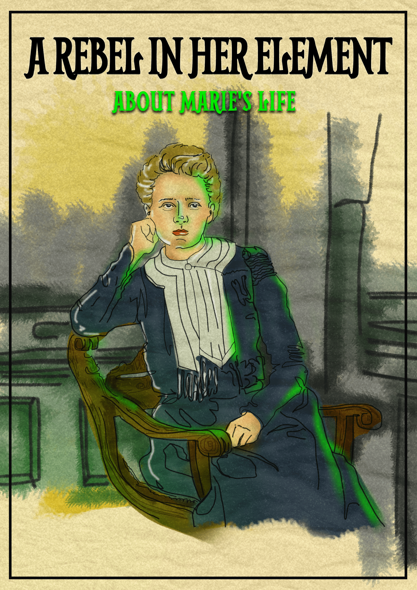
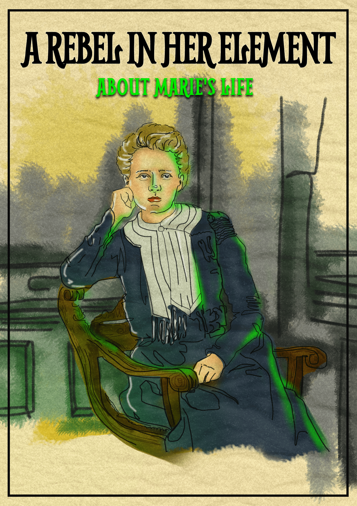

TOUCH ON ANY OF THE MAGAZINES TO FIND OUT MORE

 


Out of the lab, onto the front line
Marie was more than a brilliant mind. She was a humanitarian who wanted her science to save lives. When the First World War broke out, Marie put her work on hold. Her precious supply of radium was stored in a lead-lined container and hidden in a bank vault, to be collected again later. Instead she dedicated herself to designing the ‘radiological car’ – a portable X-ray unit for army surgeons to use on the battlefield. These life-saving vehicles became known as ‘Little Curies’. X-rays revolutionised battlefield care by helping to guide surgeries, locating broken bones and foreign objects like bullets and shrapnel. This reduced the need for amputations. Marie recruited women to donate vehicles and to operate the machines. She even went to the front line herself to operate her own ‘Little Curie’. Thanks to her, more than a million wounded soldiers received X-rays during the war. But there was a cost: in the rush to send help to the front line, there was no time for safety precautions. The effects of exposure to X-rays weren’t fully understood yet, and many volunteers – including Marie herself – later fell ill from the effects.
Power in our hands: Nuclear energy
Others built on Marie and Pierre’s work. In 1902, Ernest Rutherford revealed more about the hidden structure of the atom, and others – including Marie and Pierre’s daughter Irene Curie – experimented with what was inside.
After Marie’s death in the 1930s, researchers found that they could split the nucleus of the atom, releasing energy in a potent reaction called ‘nuclear fission’.
Then the Second World War broke out, and scientists everywhere raced to build a nuclear weapon. The United States carried out the first successful test in July 1945, and a month later, nuclear bombs were dropped on the Japanese cities of Hiroshima and Nagasaki.
Between 129,000 – 226,000 people were killed, most of them civilians. Countless other casualties later died from radiation-related illnesses. This was a legacy that humanitarian Marie, surely, would never have wanted or imagined. Then the Second World War broke out, and scientists everywhere raced to build a nuclear weapon. The United States carried out the first successful test in July 1945, and a month later, nuclear bombs were dropped on the Japanese cities of Hiroshima and Nagasaki.
Even during the war, people were already talking about using atomic energy for peaceful purposes – dreaming of ‘nuclear-powered moon shuttles’ and a future without fossil fuels. Electricity was first generated by a nuclear reactor in 1951.
‘Nothing in life is to be feared,
it is only to be understood.
Now is the time to understand more,
so that we may fear less.’
Marie Curie
Today, 11% of the world’s electricity comes from nuclear power. In the aftermath of nuclear power plant disasters at Chernobyl (1986) and Fukushima (2011), though, opinion is still divided: is it worth the risk?
Whatever the future holds for nuclear energy, Marie Curie - who made it possible - believed in science for the betterment of humanity.
Now the power is in our hands.
The seed of an idea: Cancer treatment
In the years after the Curies discovered radium, they soon began to recognise its medical potential, discovering that radiation could kill cancer cells more quickly than healthy cells. This realisation gave us a real chance against cancer for the first time.
Following exchanges with colleagues and friends specialising in the medical field, Pierre suggested that a small piece of radioactive material implanted into a cancerous tumour might help to shrink it – leading to the invention of the ‘brachytherapy seed’.
These tiny grains are used to deliver a dose of radiation into a tumour, or the space where a tumour has been removed. Marie helped establish the Radium Institute in Paris and the Curie foundation, which were dedicated to developing cancer treatments. Thanks to this research, many kinds of radiation therapy are now used to treat cancer, helping many thousands of people every year. Around four out of ten people who are cured of cancer have had radiotherapy as part of their treatment.
WHO WAS MARIE CURIE?
A REBEL AND PIONEER WHO REVOLUTIONISED SCieNCE - AND STARTED A CHAIN REACTION WHICH SHAPED THE 20TH CENTURY. MARIE DEFIED CONVENTION AT A TIME WHEN A WOMAN'S PLACE IN SCIENCE WAS OFTEN QUESTIONED. A POLISH-BORN IMMIGRANT, SHE FOUGHT FOR HER EDUCATION, AND TO HAVE HER VOICE HEARD. ALONGSIDE HER HUSBAND PIERRE, SHE LIT UP THE WORLD WITH THEIR DISCOVERY OF RADIOACTIVITY — ONE SO GROUND-BREAKING SHE BECAME THE FIRST EVER WOMAN TO WIN A NOBEL PRIZE, AND THE FIRST PERSON TO WIN TWO NOBEL PRIZES.
IN MANY WAYS, MARIE CURIE'S WHOLE LIFE WAS A SCANDAL. SHE FOUGHT FOR HER PLACE IN THE SCIENTIFIC WORLD AND SAW HER NAME HIT THE HEADLINES AFTER PAPERS PUBLISHED SOME INTIMATE LETTERS BETWEEN HERSELF AND MARRIED PHYSICIST PAUL LANGEVIN. BUT ONE FRIEND - A CERTAIN ALBERT EINSTEIN - SENT A LETTER ENCOURAGING HER TO IGNORE ALL THE HATE.
A VISIONARY AHEAD OF HER TIME, MARIE WAS A BRILLIANT SCIENTIST AND A UNIQUELY DRIVEN, PASSIONATE PERSONALITY. SHE WAS, LIKE HER RADIUM, A PECULIAR AND REMARKABLE ELEMENT THAT DOES NOT BEHAVE AS IT SHOULD.
WHO WAS PIERRE CURIE?
AN INTERNATIONALLY KNOWN PHYSICIST AND MARIE'S HUSBAND, PEOPLE OFTEN ASSUMED THAT MARIE WAS JUST PIERRE'S LAB ASSISTANT. HER NAME WAS ACTUALLY LEFT OFF THE NOBEL PRIZE NOMINATION FOR THEIR WORK, BUT PIERRE INSISTED THAT SHE WAS INCLUDED. IN A PARTNERSHIP OF EQUALS, THEIR DISCOVERIES WERE SHARED, AND SO WAS THE CREDIT. COLLABORATING WITH HER HUSBAND HELPED MARIE MAKE A NAME FOR HERSELF AT A TIME WHEN WOMEN'S CONTRIBUTIONS WERE USUALLY HIDDEN IN THE FOOTNOTES.
PAY ATTENTION
IN 1895, WILHELM ROENTGEN FOUND A NEW KIND OF RADIATION (NAMED 'X-RAYS') WHICH COULD PASS THROUGH SOLID OBJECTS. A YEAR LATER, HENRI BECQUEREL NOTICED THAT URANIUM GAVE OFF ANOTHER KIND OF INVISIBLE RAYS. MARIE, BECQUEREL'S STUDENT, WAS PAYING ATTENTION: WHILE EVERYONE ELSE TALKED ABOUT X-RAYS, SHE KNEW THAT BECQUEREL'S RAYS COULD MEAN BIG THINGS.
CHALLENGE EVERYTHING
TESTING EVERY ELEMENT WITH AN ELECTROMETER INVENTED BY PIERRE, MARIE FOUND THAT THORIUM ALSO GAVE OUT BECQUEREL RAYS. SHE CAME UP WITH A REVOLUTIONARY THEORY: THE RAYS CAME FROM SOMETHING THAT WAS HAPPENING INSIDE THE URANIUM AND THORIUM ATOMS THEMSELVES. UNTIL THEN, SCIENCE HAD ASSUMED THAT THE ATOM COULDN'T BE DIVIDED INTO SMALLER PARTS. MARIE NAMED THIS ATOMIC PROPERTY 'RADIOACTIVITY'.
HOW RADIOACTIVITY WORKS
The nucleus at the centre of an atom is made up of protons and neutrons and has a positive electrical charge, while the electrons – which circle around the nucleus - have a negative charge. Some kinds of atom don’t have a stable arrangement of these particles: either there are too many protons, too many neutrons, or too much energy in the nucleus. These atoms are called radioactive isotopes, and they emit energy in the form of radiation. Radioactivity happens naturally, and we’re surrounded by it all the time. Sunlight, the food we eat and the air we breathe all contain low levels of radiation which don’t usually harm us. Higher doses happen due to human intervention or intense exposure to naturally radioactive materials. Radiation like this can damage matter – including living tissue.
CAUSE A STIR
The next step was to study a mineral called pitchblende, which contained uranium ore, but oddly was more radioactive than uranium itself. Stirring huge vats in the ‘miserable old shed’ that was their laboratory, the Curies managed to extract a black powder 330x more radioactive than uranium. They named this new element ‘polonium’, after Marie’s home country of Poland.
DON'T GIVE UP
Even with the polonium taken out, the remaining liquid was still suspiciously radioactive. A second element was lurking in there. Getting a sample was back-breaking work. Marie worked with waste pitchblende on an industrial scale, until finally in 1902, she isolated a tiny amount of a second new element.
This was named ‘radium’, after the Latin word for ray.